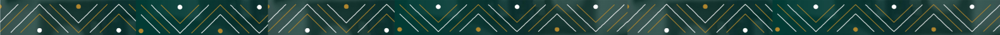

Te ofrecemos además de un excelente ambiente laboral, la oportunidad para CRECER y PROSPERAR en tu carrera profesional.

El Reto Chirripó motiva el crecimiento personal y profesional de los colaboradores, simbolizando la superación de desafíos hacia la cima.
Cumpliendo con los requisitos establecidos para cada puesto, adquiriendo nuevos conocimientos a través del estudio, el aprendizaje continuo y demostrando un compromiso constante con la excelencia se podrá avanzar hacia la cima.
Para desarrollar competencias y habilidades que permitan impulsar el crecimiento de la empresa, contribuyendo de manera efectiva al logro de los objetivos organizacionales y al éxito sostenido.
Cada paso que das es parte de un viaje emocionante, donde el trayecto es tan significativo como el destino. Cada instante es una oportunidad para dejar tu huella. Explora historias de éxito, crecimiento continuo y logros inspiradores, reflejando esfuerzo y dedicación.

Explora nuestras Posiciones y Requisitos, donde podrás conocer en detalle las oportunidades de crecimiento dentro de nuestro equipo de manufactura. Aquí encontrarás información clara sobre las posiciones disponibles, desde Operario 1 hasta Supervisor, junto con los requisitos necesarios para cada rol. Descubre cómo puedes avanzar en tu carrera y qué habilidades y experiencias te acercarán a tus metas profesionales.